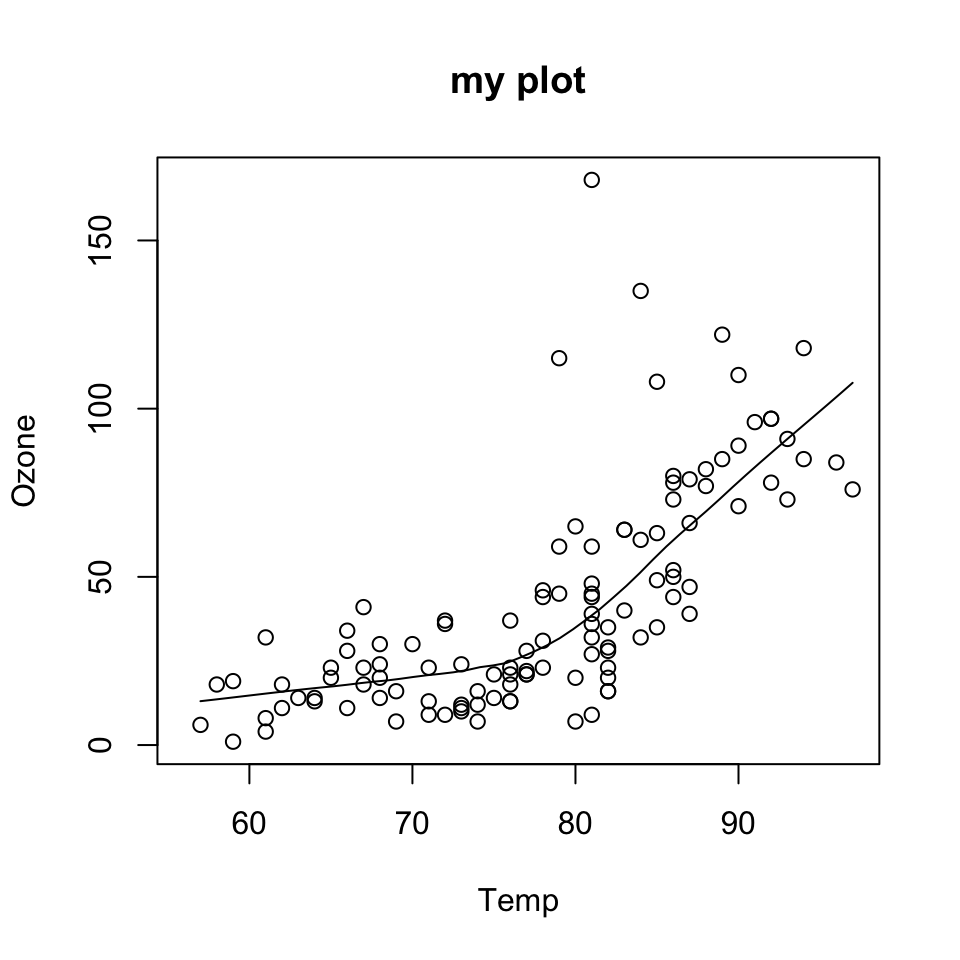
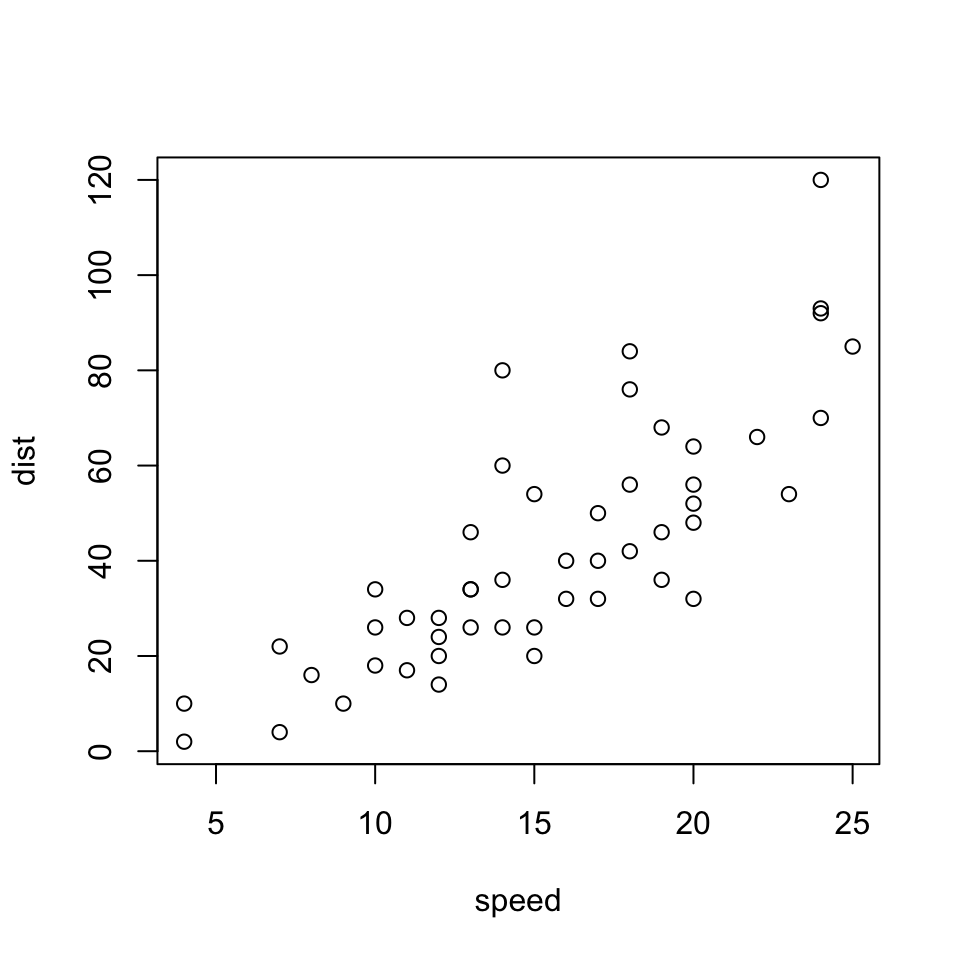
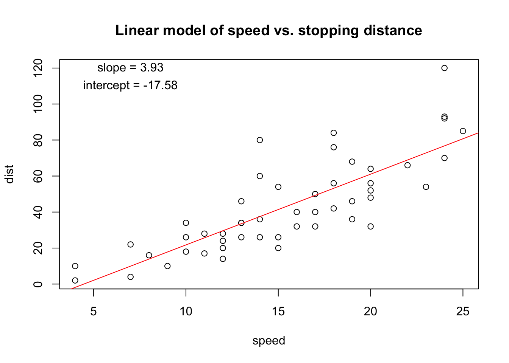
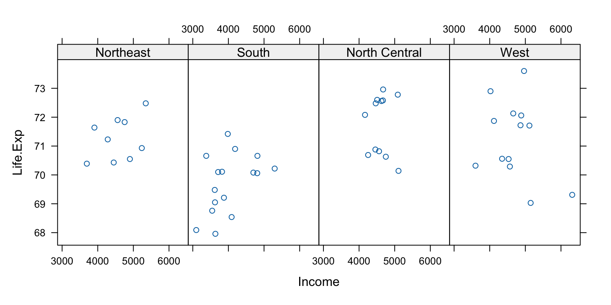

install.packages(c("lattice", "ggplot2"))The data may not contain the answer. And, if you torture the data long enough, it will tell you anything. —John W. Tukey
#✏️
Addtional Resources
Excellent references
For more details see
- https://r4ds.had.co.nz/data-visualisation
- Paul Murrell (2011). R Graphics, CRC Press.
- Hadley Wickham (2009). ggplot2, Springer.
- Deepayan Sarkar (2008). Lattice: Multivariate Data Visualization with R, Springer.
Acknowledgements
Material for this lecture was borrowed and adopted from
- https://www.stephaniehicks.com/jhustatcomputing2022/posts/2022-09-13-plotting-systems/
- https://rdpeng.github.io/Biostat776/lecture-plotting-systems
Learning objectives
At the end of this lesson you will:
- Be able to identify and describe the three plotting systems in R
- Be able to implement simple plots in each
Overview
There are three different plotting systems in R and they each have different characteristics and modes of operation.
Important
The three systems are
- The base plotting system
- The lattice system
- The ggplot2 system
This course will focus primarily on the base and ggplot2 plotting systems. Lattice is presented for context.
If you don’t have these already, please install:
and then
The Base Plotting System
The base plotting system is the original plotting system for R. The basic model is sometimes referred to as the “artist’s palette” model, because you start with a blank canvas and add to it, element by element.
We begin with an R plotting function that creates a new plot window typically the plot() function, and we can add annotations to the plot with functions such as (text, lines, points, axis).
If you get an error
Error in plot.xy(xy.coords(x, y), type = type, ...) :
plot.new has not been called yetIt is probably because you tried to add an annotation before you created a plot first.
The base plotting system is often the most convenient plotting system to because it mirrors the cartesian coordinate (X,Y) syntax that we sometimes think of when building plots and analyzing data.
It is also the most customizablbe because there are many options that users can specify. See the help page for ?plot.default and ?par for graphical parameters that once can set. It does take some learning, but it is possible to make multi-figure plots while precisely controlling their placement, margins, and any annotations including points, lines, text etc.
The plot system is also very useful at the very beginning of a data analysis When we donʻt precisely know what we want to plot. We can start by “throwing some data on the page” and then slowly modifying or adding more information to it as our thought process evolves.
Example
We might look at a simple scatterplot and then decide to add a linear regression line or a smoother to it to highlight the trends.
data(airquality)
with(airquality, {
plot(Temp, Ozone)
lines(loess.smooth(Temp, Ozone))
})
In the code above:
- The
plot()function creates the initial plot and draws the points on the canvas. - The
linesfunction is used to annotate or add to the plot (in this case it adds a loess smoother to the scatterplot). - R has many other types of smoothing functions as well.
Next, we use the plot() function to draw the points on the scatterplot and then use the main argument to add a main title to the plot.
data(airquality)
with(airquality, {
plot(Temp, Ozone, main = "my plot")
lines(loess.smooth(Temp, Ozone))
})
One downside with constructing base plots is that annotations can only be added. If your annotations are crashing, or you run out of room, etc., you will have to rerun the code starting from plot().
And while the base plotting system is nice in that it gives you the flexibility to specify these kinds of details to painstaking accuracy, sometimes it would be nice if the system could just figure it out for you. Thatʻs where lattice and ggplot2 have contributed.
Another downside of the customizability of the base plotting system is that it is difficult to describe or translate a plot to others because there is no clear graphical language or grammar. In other words, you cannot paint the format of one onto another plot, unless you design the code (maybe by using the same variable names, etc.) to do it yourself.
The only real way to describe what you have done in a base plot is to just list the series of commands/functions that you have executed, which is not a particularly compact way of communicating things. The ggplot2 package has developed a grammar of graphics that make transferring formats easy.
Example
Another typical base plot for a linear regression is constructed with the following code. Here we are using formula representation. Instead of plot(x,y) we use plot(y~x) which is read “plot y as a function of x”. These styles are equivalent, but formula is in the style of regression models.

We can add annotations as before. This time, to add the regression line to the plot, we use the abline() function which adds straight lines, specified by slope and intercept.
with(cars, plot(dist ~ speed))
## Add annotations
title("Linear model of speed vs. stopping distance")
abline(lm.fit, col="red")
text(7, 120, paste("slope =", round(coef(lm.fit)[2], digits=2)))
text(7, 110, paste("intercept =", round(coef(lm.fit)[1], digits=2)))
Using text() we added the slope and intercept from the linear model fit. That information is returned by the coef() function. We used round() to make it prettier (8 decimal places is not necessary!)
The Lattice System
The lattice plotting system is ideal for visualization of multivariate data, and is implemented in the lattice R package which comes with every installation of R (although it is not loaded by default).
To use the lattice plotting functions, you must first load the lattice package.
With the lattice system, plots are created with a single function call, such as xyplot() or bwplot(), and the plot is delivered in a predefined format.
There is no real distinction between functions that create or initiate plots and functions that annotate plots because it all happens at once.
Lattice plots tend to be most useful for conditioning types of plots, i.e. looking at how y changes with x across levels of z.
- e.g. these types of plots are useful for looking at multi-dimensional data and often allow you to squeeze a lot of information into a single window or page.
Another aspect of lattice that makes it different from base plotting is that things like margins and spacing are set automatically. The downside is that it is not very customizable.
Example
Here is a lattice plot that looks at the relationship between life expectancy and income and how that relationship varies by region in the United States.
state <- data.frame(state.x77, region = state.region)
head(state) Population Income Illiteracy Life.Exp Murder HS.Grad Frost Area
Alabama 3615 3624 2.1 69.05 15.1 41.3 20 50708
Alaska 365 6315 1.5 69.31 11.3 66.7 152 566432
Arizona 2212 4530 1.8 70.55 7.8 58.1 15 113417
Arkansas 2110 3378 1.9 70.66 10.1 39.9 65 51945
California 21198 5114 1.1 71.71 10.3 62.6 20 156361
Colorado 2541 4884 0.7 72.06 6.8 63.9 166 103766
region
Alabama South
Alaska West
Arizona West
Arkansas South
California West
Colorado West
You can see that the entire plot was generated by the call to xyplot() and all of the data for the plot were specified to come from the state data frame.
The layout specifies four panels —one for each region— within each panel is a scatterplot of life expectancy and income. Note that in this case, layout is columns, rows. Try changing the numbers or leaving out the layout argument and see what happens.
The notion of panels comes up a lot with lattice plots because you typically have many panels in a lattice plot (each panel typically represents a factor level, like “region”).
Note
Downsides with the lattice system
- It can sometimes be very awkward to specify an entire plot in a single function call (you end up with functions with many many arguments).
- Annotation in panels in plots is not especially intuitive and can be difficult to explain. In particular, the use of custom panel functions and subscripts can be difficult to wield and requires a lot of trial and error.
The ggplot2 System
The ggplot2 plotting system attempts to split the difference between base and lattice in a number of ways.
Note
Taking cues from lattice, the ggplot2 system automatically deals with spacings, text, titles but also allows you to annotate by “adding” to a plot, with annotations added in layers.
The ggplot2 system is implemented in the ggplot2 package (part of the tidyverse package), which is available from CRAN (it does not come with R).
You can install it from CRAN via
install.packages("ggplot2")and then load it into R.
Superficially, the ggplot2 functions are similar to lattice, but the system is generally easier and more intuitive to use once you learn the syntax.
The defaults used in ggplot2 make many choices for you, but you can still customize plots.
Example
A typical plot with the ggplot2 package looks like the code below.
Note the use of the pipe operator %>% from the magrittr package in the tidyverse, which sends the dataframe mpg as input into the function ggplot. People love the pipe operator because you can just pass output along from one function to the next (as long as the function is written for piping). All of the tidyverse allows piping, and some base R functions do as well.

In ggplot, elements of the plot are specified as aesthetics, and layers can be added onto the plot with + anotherfunction(). Try running the first part, and then running the whole thing together. Then try adding + geom_smooth()
There are additional functions in ggplot2 that allow you to make arbitrarily sophisticated plots.
We will discuss more about this in the next lecture.